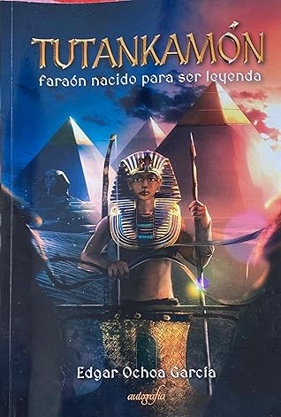

Tutankamón, faraón nacido para ser leyenda
Reseña por Jorge I. Zuluaga

Ver reseña en GoodReads (necesita cuenta)
Esta es mi cuarta novela histórica sobre los hechos que rodearon el turbulento período de Amarna (¡y todavía me falta!). En esta fase de la historia del antiguo Egipto, el faraón Amenhotep IV, Ajenatón, decidió revolucionar el estado Egipcio, sus instituciones religiosas e incluso sus conservadoras tradiciones artísticas, proclamando el culto de un único dios, el disco solar Atón muy por encima de los demás dioses de Egipto, en especial del todopoderoso Amón. Ajenatón también traslado la corte y la capital administrativa y religiosa del imperio desde la que había sido por siglos la ciudad más importante del país, Tebas, hacia una ciudad nueva, Ajetatón o Amarna, una verdadera Brasilia de la antigüedad. Allí, además del cambio en el culto religioso, que extendió con edictos por todo el País de las Dos Tierra, promovió una revolución en el estilo artístico que, a pesar de los esfuerzos posteriores, perduró en el tiempo y hoy todavía reconocemos como el estilo de Amarna.
Los hechos y personajes que rodearon aquel turbulento período no son tan bien conocidos como quisiéramos. El mismo Ajenatón, su madre Tiya, Nefertiti (la esposa real), sus hijas, Meritatón y Anjesepatón, el visir Ay y su esposa, el general Horemheb y por supuesto el más famoso (pero no por ello más conocido) de todos ellos, Tutanjamón, hijo, hermano, sobrino de Ajenatón, no es muy claro todavía.
La razón del desconocimiento actual de la vida y legado de estos personajes es diversa. La más importante (aunque no la única) es la damnatio memoriae a la que fueron sometidos los protagonistas oficiales de esta historia: los faraones Ajenatón y Tutanjamón. Sus templos, monumentos y tumbas fueron "borrados" de la historia de Egipto con el propósito de olvidar la que los reyes posteriores consideraron una anomalía en la historia de su poderoso y bendito país. Con la damnatio memoriae a la que fueron sometidos Ajenatón y Tutanjamón, desaparecieron detalles importantes de este interesante período de la historia y es justamente ese mismo vacío el que ha dado material suficiente a los escritores para crear novelas como "Tutankamón, faraón nacido para ser leyenda".
Las novelas que había leído previamente, una de ellas del premio Nobel de literatura Naguib Mahfouz, se concentran especialmente en la vida de Ajenatón y Nefertiti; otras lo hacen sobre los sucesores de Tutanjamon, Ay y Horemheb, los autores de la damnatio memoriae de Amarna. Esto es precisamente lo que hace especial la novela de Edgar. En ella la atención se centra en un personaje intermedio y del que creemos, vale la pena aclarar, solo tuvo el mérito póstumo de ser el único rey del que nos quedo una tumba casi intacta. Aunque Tut, como se lo llama informalmente, es conocido como el faraón niño, una cosa me queda clara después de leer la novela de Edgar: Tut, de niño solo tuvo la talla de las sandalias.
La novela, que no se basa en solo en las especulaciones del autor sino que esta debidamente documentada en sólidas investigaciones egiptológicas, comienza con los años previos al nacimiento de Tutanjamón en el seno de la familia real (una de las hipótesis del libro es que Tut fue hijo de Ajenatón con una esposa secundaria lo que todavía es materia de debate). El grueso de la historia cubre los años de infancia y adolescencia del que se convertiría posteriormente en rey de Egipto a la muerte de Ajenatón. Termina con la muerte de Tut, cuya causa todavía es desconocida pero sobre el cual Edgar acoge una de las más interesantes teorías en boga (que no adelantaré para no arruinar la sorpresa), su embalsamamiento y la preparación en tiempo récord de su morada final, un hipogeo modesto en el Valle de los Reyes que se convertiría 3000 años después en la tumba más famosa de la antigüedad después de las grandes pirámides.
No puedo decir que la novela sea un dechado de virtudes literarias. En realidad, debo confesar que estuve a punto de abandonarla un par de veces por sus defectos: personajes pobremente desarrollados, errores en el paso del tiempo, situaciones y diálogos inverosímiles, incluso errores históricos. En este caso, el vicio que tengo de no abandonar una obra me permitió, a la larga, saborear los apartes más entretenidos y emocionantes de la novela, en especial, aquellos se producen en el último tercio.
Pero también, leer la novela completa me dejo un mensaje interesante que espero la investigación científica siga confirmando. Tutanjamón no fue un rey menor, ni tampoco el "faraón niño" cuya tumba sobrevivió por suerte al saqueo de sus coterráneos. Todo parece indicar que en los pocos años que tuvo la oportunidad de llevar la doble corona, Tut, a pesar de su corta edad y sus problemas de salud, reformo a Egipto y mantuvo sus fronteras protegidas, fue un rey guerrero y valiente, como lo atestiguan muchos de los objetos encontrados en su prolijo ajuar funerario, que tuvo, tal vez, la mala suerte de llevar la sangre de una familia odiada por sus sucesores.
Después de leer la novela de Edgar no miraré con los mismos ojos, si alguna vez tengo la oportunidad de hacerlo, los objetos encontrados en su tumba. Ahora, me merecen mucho más respeto.
Gracias Edgar por transmitir a través de tus ficciones una admiración renovada por el borroso legado de Nebjeperure Tutanjamón.